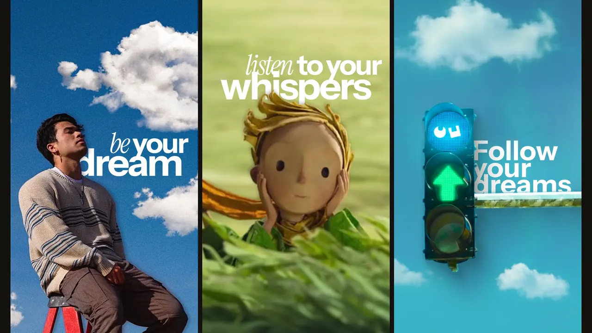

Base
€520/mese
- 8 reel al mese
Monto i contenuti di creator, founder e consulenti: tu giri, io penso a ritmo, sottotitoli e consegna. Più di 860.000 visualizzazioni su 12 reel per un creator da 239.000 follower.
Monto i contenuti di Nikola Greku, creator da 239.000 follower. In 12 reel montati da me: oltre 860.000 visualizzazioni, media di circa 72.000 a reel, il migliore a 237.000. Su YouTube, un video montato da me ha superato le 65.000 visualizzazioni.
Dati di Instagram e YouTube, aggiornati a novembre 2026.
20 minuti, nessun impegno. Ti rispondo entro un giorno.
Un abbonamento mensile al montaggio dei tuoi contenuti. Mi mandi i girati, io consegno reel pronti da pubblicare.
€520/mese
€720/mese
€920/mese
Incluso in tutti i pacchetti
Prezzi in euro al mese. Contratto mensile, puoi fermarti quando vuoi. Pacchetto su misura? Scrivimi.
Ci sentiamo su WhatsApp: guardiamo i tuoi contenuti e scegliamo il pacchetto giusto.
Tu giri, io penso a ritmo, sottotitoli e musica.
In 3-5 giorni lavorativi, in formato 9:16, con 2 giri di correzioni per ogni reel.
20 minuti, nessun impegno. Ti rispondo entro un giorno.




Creator · Instagram e YouTube
Reel montati per Instagram
Brand · TikTok
Wear Your Dreams
Video su TikTok
Professionista · Instagram
Il diritto, spiegato semplice
Startup · Video aziendali
Mini documentario · M106 Production
La tecnologia risveglia il passato
Cortometraggio · M106 Production
Il montaggio lento e narrativo è il mio punto di partenza. Questi sono i lavori a cui tengo di più.


Sono Antonio, video editor freelance. Aiuto creator, founder e consulenti ad avere video costanti, senza dover imparare a montare.
Monto video da freelance dal 2020, per creator, brand e professionisti; per documentari, cortometraggi e video aziendali curo anche riprese e regia. Dal 2022 al 2024 mi sono occupato del marketing di FeedEat, startup nata tra i banchi di scuola.
Ognuno ha il suo modo di esprimersi. Il mio è attraverso i video.
Sono laureato in Informatica per la Comunicazione Digitale all'Università di Camerino: per questo, accanto al montaggio, scrivo anche codice.
Plugin per DaVinci Resolve
So anche automatizzare: ho creato SmartSubs Pro, un plugin per DaVinci Resolve che velocizza i sottotitoli. Per te vuol dire consegne più rapide.
Accanto al montaggio scrivo codice: SmartSubs l'ho ideato e sviluppato io, per togliere dal montaggio la parte più meccanica.
Scopri SmartSubs ↗
In 3-5 giorni lavorativi da quando ricevo i girati.
2 giri di correzioni per ogni reel, in tutti i pacchetti.
No. Il contratto è mensile e puoi fermarti quando vuoi.
Ne parliamo nei primi 20 minuti: guardiamo cosa giri già e scegliamo insieme il modo più comodo per mandarmi i girati.
No: monto anche per founder, consulenti e professionisti.
Il montaggio lo faccio da remoto, ovunque tu sia. Riprese e regia per documentari, cortometraggi e video aziendali, per ora, solo nell'area di Benevento.
Nessun problema: conta come due reel del pacchetto.
Posso preparare un pacchetto su misura: scrivimi su WhatsApp.
Con DaVinci Resolve. Per i sottotitoli uso anche SmartSubs Pro, il plugin che ho sviluppato io.